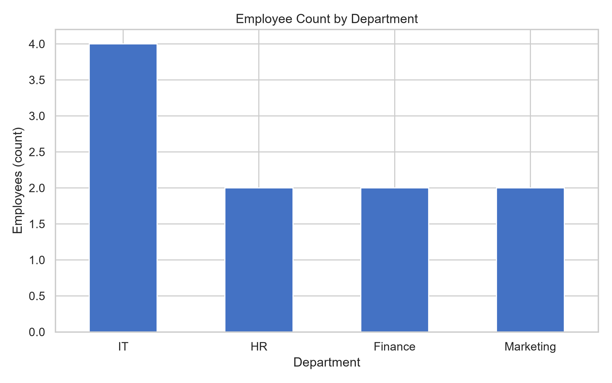
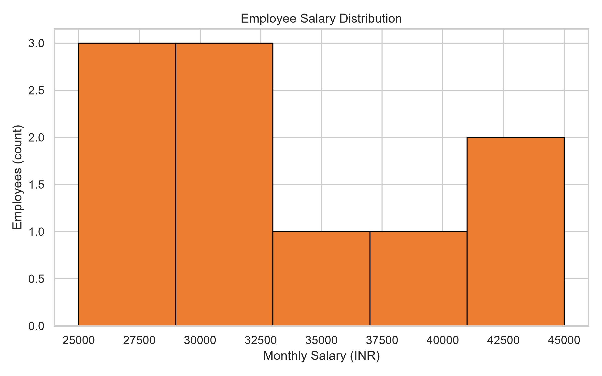
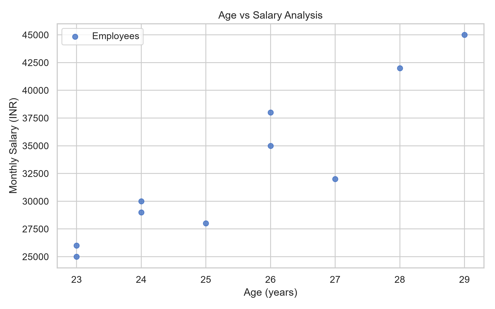
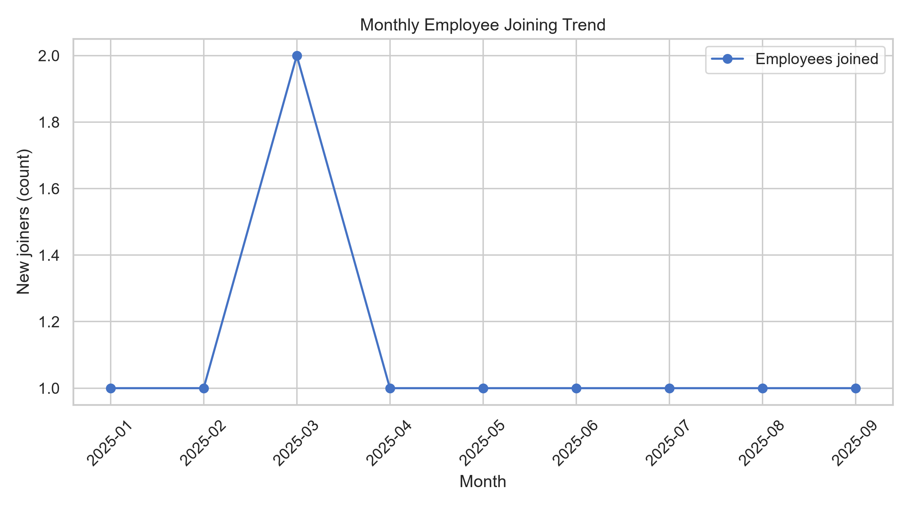
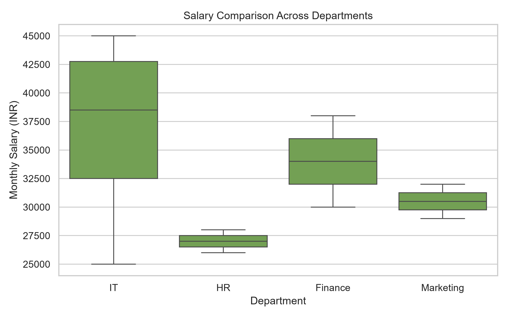

Explore employee department distribution, salary patterns, age/salary relationship, and recruitment trends.
10 synthetic employee records with department, age, salary, and joining date. This dataset is for practice and does not represent a real company.
The dataset is very small and synthetic. It lacks role, experience, performance, and attrition information, so findings are illustrative.

Insight: IT has the largest headcount (4). Other departments have 2 each.

Insight: Sample monthly salary values range from ₹25,000 to ₹45,000.

Insight: The sample suggests a general upward pattern; age alone is not determinative.

Insight: One employee joined per month from January through September 2025.

Insight: IT salary values are higher in this small sample; interpret cautiously.